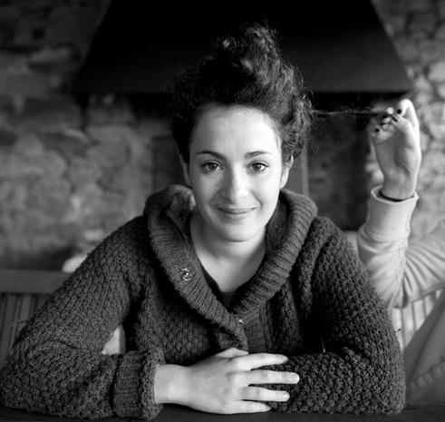
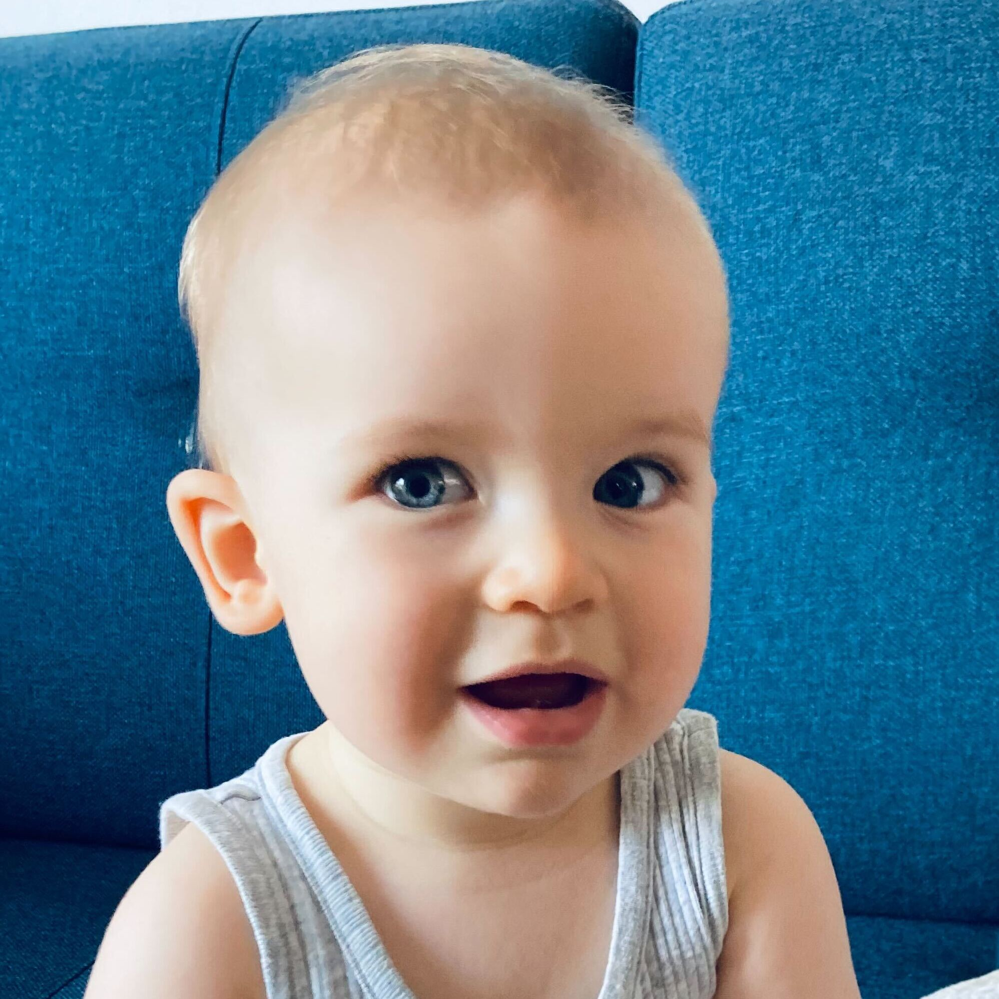

Bienvenue sur ma page 👋🏻
Ce que je peux vous raconter
Je m'appelle Alice Laurin, j'ai 35 ans et je suis apprentie développeuse
J'habites à Nantes depuis 3 ans, je viens de la région parisienne.
J'ai 2 garçons :

Joachim
5 ans

Camille
1 an
Dans la vie, jaime
- 🃏 jouer
- 👩🏻💻 glander
- 📺 les émissions pourries à la télé
- 🏝️ voyager
- 🍻 boire des verres en terrasse
- 📖 lire
- 👸🏻 j'ai une passion cachée (plus maintenant) pour les Miss France
Je suis chef de projet digital chez Castor & Pollux, une agence de communication digitale basée à Montreuil
On y fait un peu de tout : du Social Media, de la refonte de site, des campagnes de pub, des spots TV, du motion design, de la 3D etc...
Mais ma spécialité c'est la refonte de site